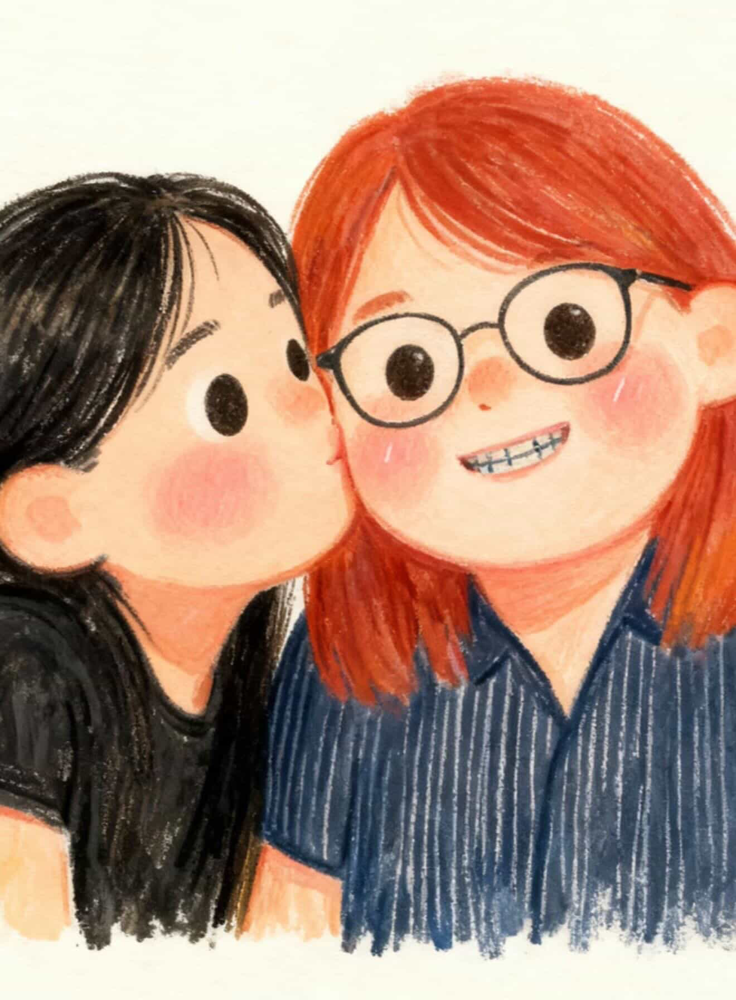

LOVE AT FIRST SCRATCH
A love secret is hidden inside. Scratch to reveal your surprise 👀

✨ Tap here for more surprise!
i mean.... in this economy??????? YOU ARE MY MOST PRECIOUS TREASURE.
scratched: 0%